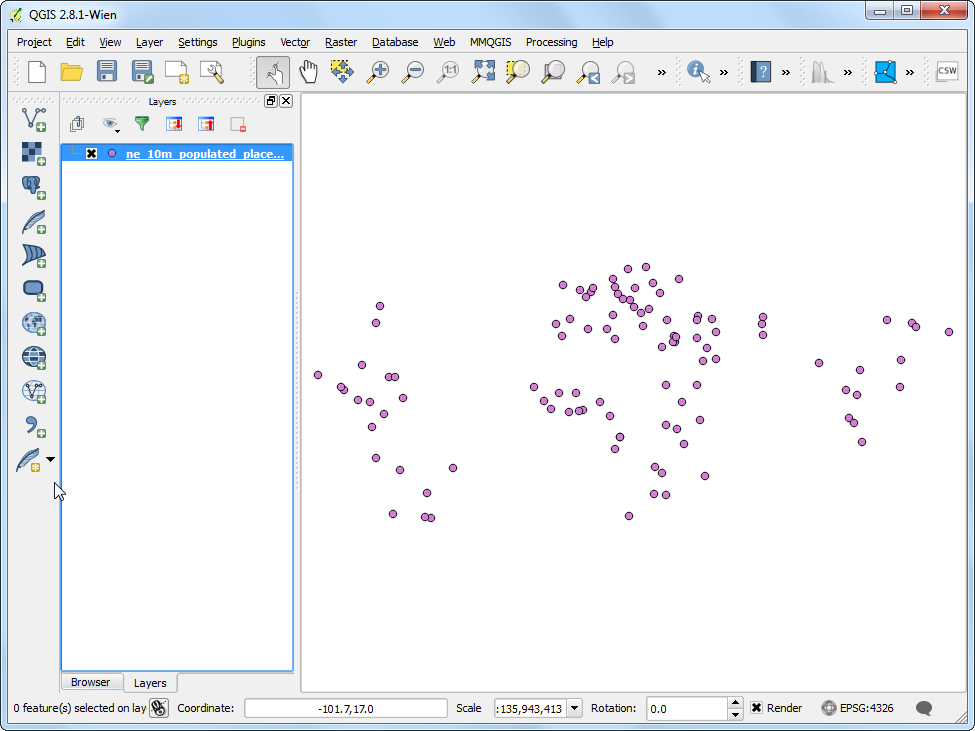
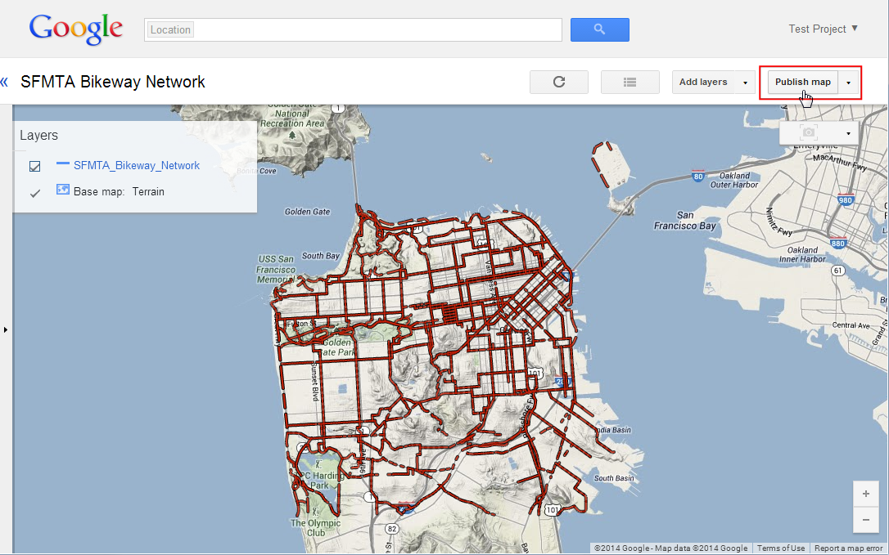
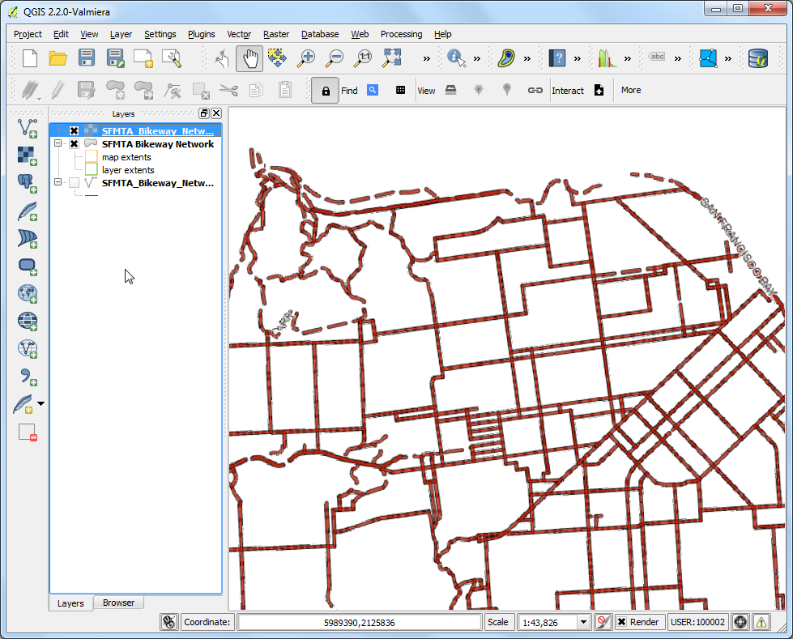

Google Maps Engine Connector gebruiken voor QGIS
[ Download PDF A4 Letter ]
Waarschuwing
Vanaf 29 januari 2015 is Google Maps Engine gestopt met het maken van nieuwe gratis accounts. Als u al een account voor Maps Engine had, zal de Google Maps Engine Connector nog werken tot en met 29 januari 2016.
Google Maps Engine is een cloud-gebaseerd mappingplatform voor het maken en delen van aangepaste kaarten. Google Maps Engine Connector is een plug-in die u in staat stelt gegevens van Google Maps Engine te bekijken en te uploaden vanuit QGIS. Deze handleiding zal u leiden door het proces van het maken van een account voor Google Maps Engine, de noodzakelijke gegevens te verkrijgen voor het gebruik van de verbinding, een kaart maken met behulp van Google Maps Engine en de resulterende kaart gebruiken in QGIS.
Notitie
Disclaimer: Ik ben de auteur van de Google Maps Engine Connector en momenteel lid van het team van Google Maps.
Overzicht van de taak
We zullen een lijnenlaag nemen die de fietsroutes in San Francisco weergeeft en die uploaden naar Google Maps Engine met behulp van de plug-in. Als de laag eenmaal is opgemaakt en een kaart is gemaakt, zullen we die kaart toevoegen aan QGIS als een WMS-laag.
Andere vaardigheden die u zult leren
Een account voor Google Maps Engine maken
U kunt een gratis probeer-account voor Google Maps Engine aanvragen. Het probeer-account is een volledig functionerende Maps Engine instance met beperkte quota voor opslag. Bezoek Google Maps Engine homepage en klik op de link Get started with a free account.

U zult zich moeten inschrijven met uw Google-account. Indien u uw e-mail van uw werk wilt gebruiken, kunt u ook een nieuw account voor Google maken met uw e-mail van uw werk. Eenmaal ingelogd zult u het scherm Create a Maps Engine Project zien. Voer een Project Name in die uw account zal identificeren bij het gebruiken van Google Maps Engine. Accepteer de voorwaarden en klik op de knop Accept and create.

Een Google Developer Console project maken
De Google Maps Engine Connector gebruikt de Google Maps Engine API om toegang te krijgen tot de in uw account opgeslagen gegevens. U zult speciale toegangsvoorwaarden moeten verkrijgen die de plug-in zal gebruiken om programmatisch toegang tot uw gegevens te kunnen krijgen. Bezoek Google Developer Console en klik op Create Project. Voer GME Connector for QGIS API in als de PROJECT NAME en gme-qgis-api als de PROJECT ID. Deze namen zijn slechts suggesties - u kunt elke naam en ID gebruiken die u wilt.

Klik, als het project is gemaakt, op de link APIs & auth. Scroll naar beneden en zoek de Google Maps Engine API op. Klik op de knop OFF om die te schakelen naar ON.

Klik vervolgens op de link Credentials. Klik op CREATE NEW CLIENT ID in het gedeelte OAuth.

Selecteer, in het dialoogvenster Create Client ID, Installed Application als het APPLICATION TYPE en Other als het INSTALLED APPLICATION TYPE. Klik op Create Client ID.

Als de client-ID eenmaal is gemaakt, zult u een nieuw gedeelte zien, genaamd Client ID for native application. Onthoud de Client ID en Client secret. Dat zijn de gegevens die u zult moeten gebruiken in QGIS.

Ga, terug in QGIS, naar . Zoek naar de plug-in Google Maps Engine Connector en klik op Installeer plug-in.

Als de plug-in eenmaal is geïnstalleerd zult u een nieuwe werkbalk zien in QGIS. Deze werkbalk bestaat uit verschillende gereedschappen om te werken met de Google Maps Engine. Klik op de knop More.

Voer, in het dialoogvenster Advanced Settings, de Client ID en Client Secret in die u verkreeg van Google Developer Console. Klik op OK.

Omdat u uw nieuwe gegevens voor de API heeft ingevoerd, zult u worden gevraagd in te loggen en de plug-in te autoriseren om deze te gebruiken. Log in op uw Google-account.

Klik op Accept in het volgende csherm.

Als alles goed ging zult u een bericht zien dat aangeeft dat u met succes bent ingelogd.

Laten we nu de laag SFMTA Bikeway Network toevoegen die eerder werd gedownload. Ga naar . Blader naar het gedownloade bestand SFMTA_Bikeway_Network.zip en klik op Open. Selecteer de laag SFMTA_Bikeway_Network.shp en klik op OK.

Eén van de mogelijkheden van de plug-in Google Maps Engine Connector is de mogelijkheid om gegevenssets direct te uploaden vanuit QGIS. Selecteer de laag SFMTA_Bikeway_Network en klik op het pictogram Upload op de werkbalk.

Voer, in het dialoogvenster Upload a dataset to Google Maps Engine, een Description voor de gegevensset in. U kunt alle andere instellingen op hun standaard waarden laten staan. Klik op OK.

De plug-in zal de Google Maps Engine API gebruiken om de laag te uploaden en een Google Maps Engine Data Source maken. Als de upload eenmaal is voltooid, zal een nieuwe browsertab openen en u meenemen naar de nieuw gemaakte gegevensbron.

De volgende paar stappen zullen het proces van het maken van een kaart met behulp van Google Maps Engine demonstreren. Als de kaart eenmaal is gemaakt, kunnen we toegang krijgen tot die kaart met behulp van de plug-in in QGIS. Klik op Create styled layer als uw vectortabel klaar is met de verwerking.

Noem de laag SFMTA_Bikeway_Network en klik op Create.

Klik op Add rule om een aangepaste stijl voor de laag toe te voegen.

Kies de kleur- en labelopties in het gedeelte Line style. Klik op Apply om de instellingen voor de stijl te bekijken die zijn toegepast op uw laag. U kunt ook de optie No Basemap selecteren uit de rechter bovenhoek om uw laag te bekijken zonder de onderliggende basiskaart. Schakel naar de tab Info windows als u tevreden bent met de opmaak.

Hier kunt u specificeren welke inhoud weergegeven moet worden als er op een object op de kaart wordt geklikt. U kunt toegang verkrijgen tot de attributen van de objecten dor middel van de markup {attribute_name}. In dit geval willen we alleen de straatnaam weergeven voor het object line. Voer de volgende tekst in in het tekstgebied. Klik op Apply en klik op elk object line op de kaart om de code voor het Info-venster te testen. Selecteer, indien gereed, de knop Publish on exit en klik op Exit.
<div class='googeb-info-window' style='font-family: sans-serif'>
{STREETNAME} {TYPE}
</div>

Klik op Add to map om een kaart te maken met deze laag.

Selecteer Create new en voer SFMTA Bikeway Network in als de Map title.

Nu zult u ene kaart zien die de opgemaakte laag bevat. U heeft de optie om te kiezen uit verschillende basiskaarten voor de kaart. Omdat dit een kaart is voor fietspaden kunt u de basiskaart met de Terrain kiezen.

Klik op Publish map.

Kli, als de kaart eenmaal is gepubliceerd, op het pictogram Access links.

U zult verscheidene opties zien om de nieuw gemaakte kaart weer te geven, in te bedden of toegang te verkrijgen tot. Omdat we toegang tot de kaart zullen verkrijgen met behulp van de plug-in in QGIS, heeft u geen links van hier nodig.

Klik, terug in QGIS, op het pictogram Search op de werkbalk.

In het dialoogvenster Maps Engine Maps, zult u uw kaart zien vermeld. Klik op de rij om hem te selecteren. Klik op Add Selected to Map.

De plug-in zal de Google Maps Engine bevragen en een vectorlaag laden die het begrenzingsvak voor de kaart zal laden. Als u geen gegevens in het kaartvenster ziet, klik dan met rechts op de laag SFMTA_Bikeway_Network en selecteer Op kaartlaag inzoomen.

Klik op de laag van het begrenzingsvak om die te selecteren. U zult zien dat de gereedschappen View nu zijn ingeschakeld. Klik op het pictogram WMS Overlay op de werkbalk.

Kies, in het dialoogvenster Select A Layer to Add, de laag SFMTA_Bikeway_Network en klik op Add Selected to Map.

Een nieuwe WMS-laag zal worden toegevoegd aan QGIS en u zult uw opgemaakte laag uit Google Maps Engine zien weergegeven in QGIS.

Ik hoop dat deze handleiding een overzicht geeft van de mogelijkheden van de plug-in. U kunt de plug-in thuispagina bezoeken om de broncode te bekijken en meer te weten te komen over de plug-in.
Below is the Google Maps Engine map that was created for this tutorial.